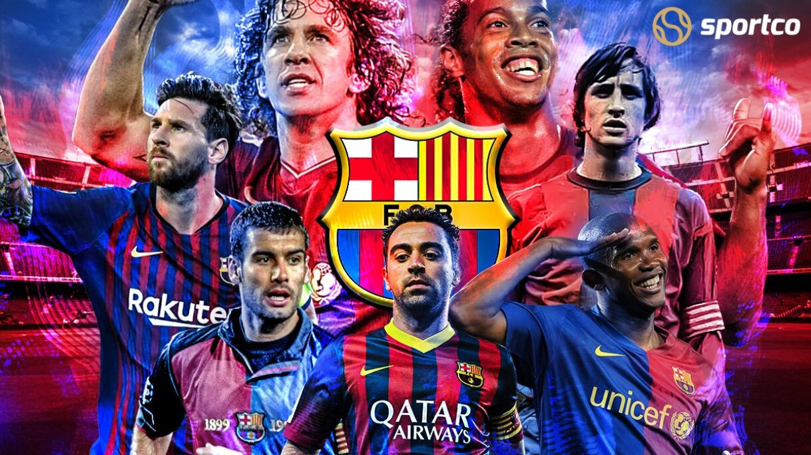
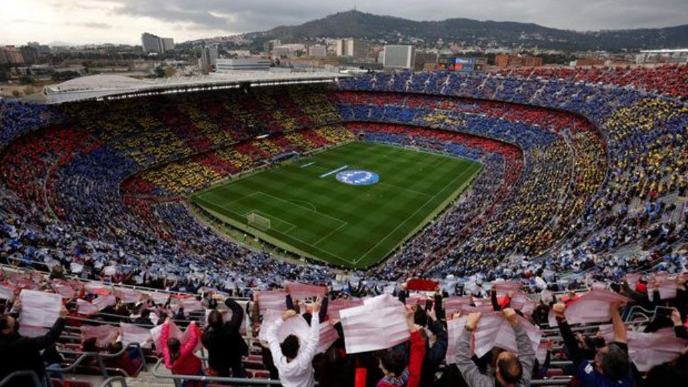
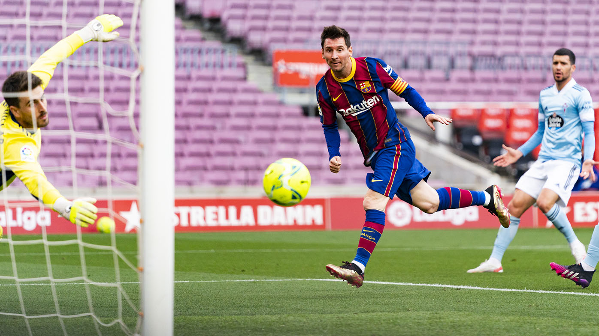
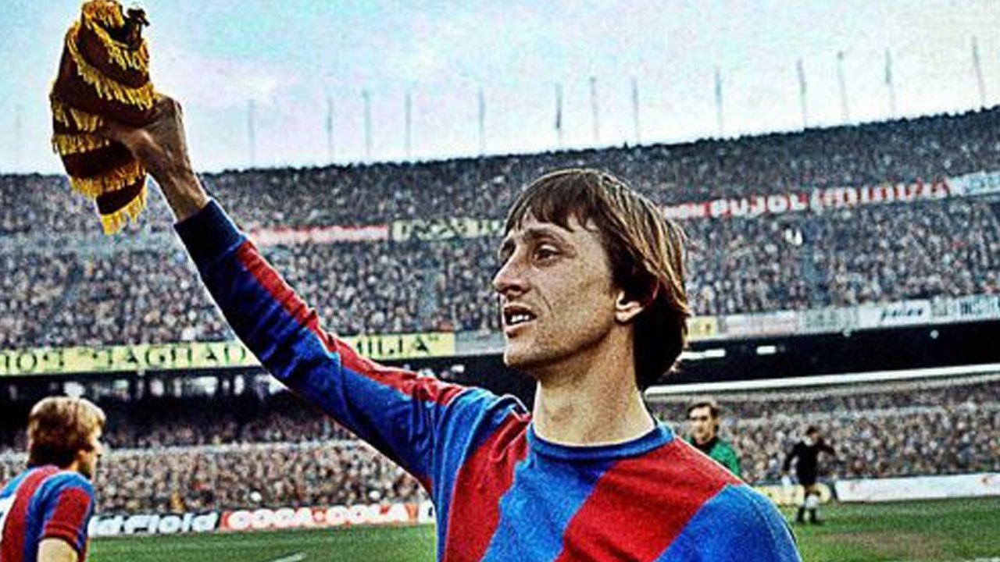

Sejarah

Barcolana yang lahir pada 29 November 1899 ini dibentuk oleh Hans Gamper. Pembentukan FC Barcelona berawal ketika Gamper menaruh iklan di koran Los Deportes pada Oktober 1899, di mana ia ingin mendirikan klub sepak bola dengan
mencari pemain berbakat dan professional. Dari iklan tersebut, Gamper mengumpulkan 11 pemain dan terbentuk klub yang saat itu bernama Foot-Ball Club Barcelona.
Singkat cerita, pada tahun 2003, Joan Laporta ditunjuk sebagai presiden baru sekaligus menandai era kebangkitan El Barca. Kehadiran pelatih Frank Rijkaard, juga menjadi puncak kesuksesan Barca pada pertengahan tahun 2000-an.
Saat itu, lulusan La Masia seperti Carles Puyol, Andres Iniesta dan Xavi Hernandes, membuat Barca semakin tak terkalahkan.
Di samping itu, kehadiran seorang Lionel Messi juga menjadi catatan penting dalam sejarah Barcelona. Messi kemudian berkembang jadi pemain terbaik Barcelona dan juga di dunia, bahkan salah satu pemain terbaik dalam sejarah sepak
bola. Pada tahun 2008, Pap Guardiola ditunjuk sebagai pelatih baru dan mampu membawa Barcelona meraih 6 trofi, termasuk La Liga, Liga Champions, dan Piala Dunia Antarklub.
Stadium

Camp Nou adalah sebuah stadion sepak bola di Barcelona, Spanyol. Stadion ini telah menjadi stadion kandang FC Barcelona sejak dibuka secara resmi pada tahun 1957. Kapasitas stadion ini menampung hingga 99,354 orang, yang mana
itu adalah stadion terbesar di Spanyol dan Eropa, dan stadion asosiasi sepak bola terbesar ke-4 di dunia dalam kapsitas.
Pada 15 Maret 2022, diumumkan bahwa layanan streaming musik Spotify telah mencapai kesepakatan dengan FC Barcelona untuk memperoleh hak penamaan stadion dalam kesepakatan senilai $310 juta. Stadion ini telah berganti nama
menjadi Spotify Camp Nou pada 25 Juli 2022, menyusul persetujuan perjanjian sponsorship dengan Spotify oleh Majelis Luar Biasa Anggota Delegasi FC Barcelona pada 3 April 2022. Pada April 2022, diumumkan bahwa renovasi stadion
akan dimulai pada Juni 2022 setelah musim berakhir.
Legends
Leo Messi

Lionel Andres Messi lahir pada 24 Juni 1987. Ia biasa dikenal sebagai Leo Messi. Ia adalah pemain sepak bola profesional Argentina yang pernah bermain sebagai penyerang untuk klub Catalan, FC Barcelona dan masih menjadi kapten
tim nasional Argentina. Pada usia 16 tahun, empat bulan, dan 23 hari, Messi melakukan debut tim pertamanya ketika ia masuk pada menit ke-75 dalam pertandingan persahabatan melawan Porto asuhan Jose Mourinho pada 16 November
2003. Selama musim 2004-05, Messi adalah starter dijamin untuk tim B, bermain 17 pertandingan sepanjang kampanye dan mencetak gol pada enam kesempatan.
Saat Messi mempertahankan performa mencetak golnya di paruh kedua musim, tahun 2012 dia memecahkan beberapa rekor lama. Pada tanggal 7 Maret, dua minggu setelah mencetak empat gol dalam pertandingan liga melawan Valencia, ia
mencetak lima gol dalam pertandingan babak 16 besar Liga Champions melawan Bayer Leverkusen, pencapaian yang belum pernah terjadi sebelumnya dalam sejarah kompetisi.
Pada tanggal 1 Juli 2021, Messi menjadi agen bebas setelah kontraknya berakhir, dengan negosiasi kesepakatan baru yang rumit karena masalah keuangan di Barcelona. Pada tanggal 5 Agustus, Barcelona mengumumkan bahwa Messi tidak
akan tinggal di klub, meskipun kedua belah pihak mencapai kesepakatan dan akan menandatangani kontrak hari itu. Klub mengutip kendala keuangan dan struktural yang ditimbulkan oleh peraturan La Liga lah yang menjadi alasan
kepergian Messi.
Carles Puyol

Carles Puyol adalah pemain bertahan asal Spanyol sekaligus kapten Barcelona. Meskipun ukuran tubuhnya termasuk kecil untuk seorang bek tengah, hanya 178 cm, namun ia diakui sebagai salah satu palang pintu terkuat di dunia.
Puyol lahir di La Pobla de Segur, Spanyol dengan nama asli Carles Puyol i Saforcada, p13 April 1978. Sosok anak dari Josep ini mudah dikenali karena gaya rambut ikalnya yang lebat.
Untuk membuktikan kepada orangtuanya, ia akhirnya bergabung dengan La Masia, akademi sepakbola junior milik raksasa Spanyol, Barcelona, 1995. Ia belajar sebagai gelandang bertahan. Selang dua tahun kemudian, ia mulai bermain
untuk Tim B Barcelona dan menempati posisi bek kanan.
Puyol mencatatkan penampilan ke-400 di semua ajang kompetisi untuk Barcelona, ketika bermain melawan Sporting Clube de Portugal di ajang Liga Champions 2008. Selama musim 2008-2010, selain dua gelar liga, Puyol juga
mengomandani rekan-rekannya untuk meraih Piala Super Eropa 2009, Liga Champions 2009 dan Piala Dunia Antarklub FIFA 2009. Puyol pun tampil di hampir seratus pertandingan resmi selama kurun waktu itu.
Johan Cruyff

Sang legenda Johan Cruyff menandai sejarah 'sebelum dan sesudah' FC Barcelona, dengan warisan yang masih dikenang hingga saat ini baik di Camp Nou serta jutaan penggemar La Liga di seluruh dunia. Prestasi unik Cruyff sebagai
pemain dan pelatih di Barcelona menjadikannya salah satu tokoh paling berpengaruh dalam sejarah LaLiga, berkat gagasan revolusionernya terhadap permainan dan kekuatan kepribadiannya dalam mengendalikan perubahan itu. Terlihat
perkasa saat ini, Barca dahulu pernah mengalami puasa gelar LaLiga selama 13 tahun saat ia datang ke Camp Nou sebagai pemain di saat musim 1973/1974 sudah berjalan.
Blaugrana telah memulai musim dengan catatan buruk dan terdampar di zona degradasi. Namun, mantan penyerang Ajax tersebut menggembleng tim hingga menjuarai gelar LaLiga dengan jarak sepuluh poin. Setelah lima musim di
Katalonia ia pindah ke Liga Sepak Bola Amerika Utara (NASL), dengan Los Angeles Aztecs sebagai klub perdananya kemudian Washington Diplomats, sebelum kembali LaLiga bersama Levante.